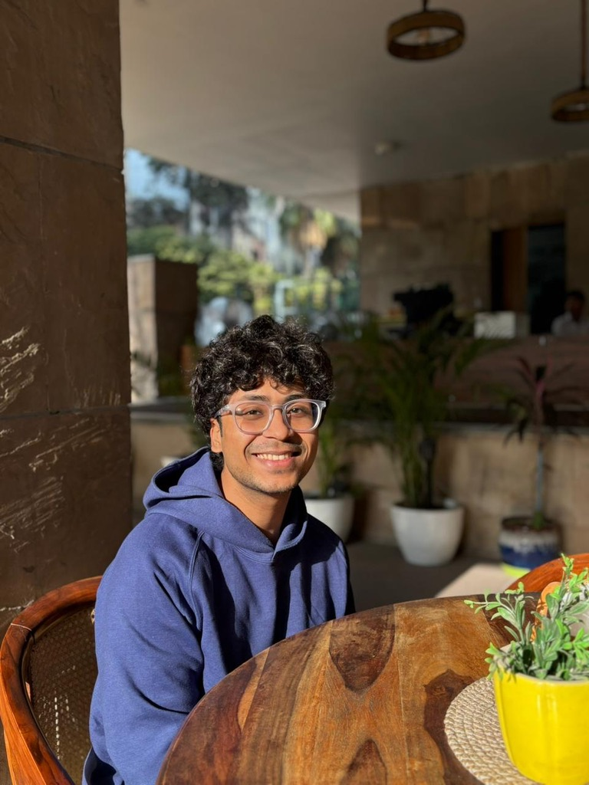

Hi there, my name is Arpan Mishra and I currently work as a Data Science Consultant at ZS Associates. I graduated in July 2021 with a Bachelor of Science in Statistics from KMC, University of Delhi.
I’m an Applied AI Engineer with ~5 years of experience building production-grade LLM systems in regulated, high-stakes environments. I specialize in translating complex business problems into scalable AI architectures—spanning multi-agent pipelines, RAG-based retrieval, prompt engineering, and evaluation frameworks. I’m equally comfortable in deep technical implementation and in communicating architectural decisions to non-technical audiences.
If I’m not building things, I’m either at the gym, napping, or losing my mind over FIFA.